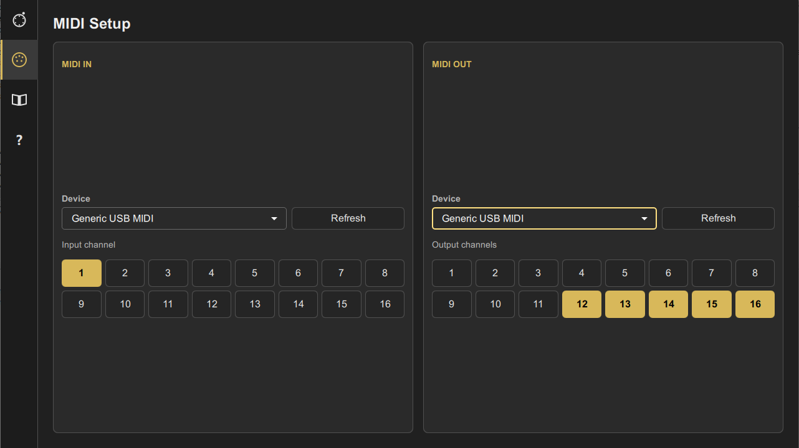
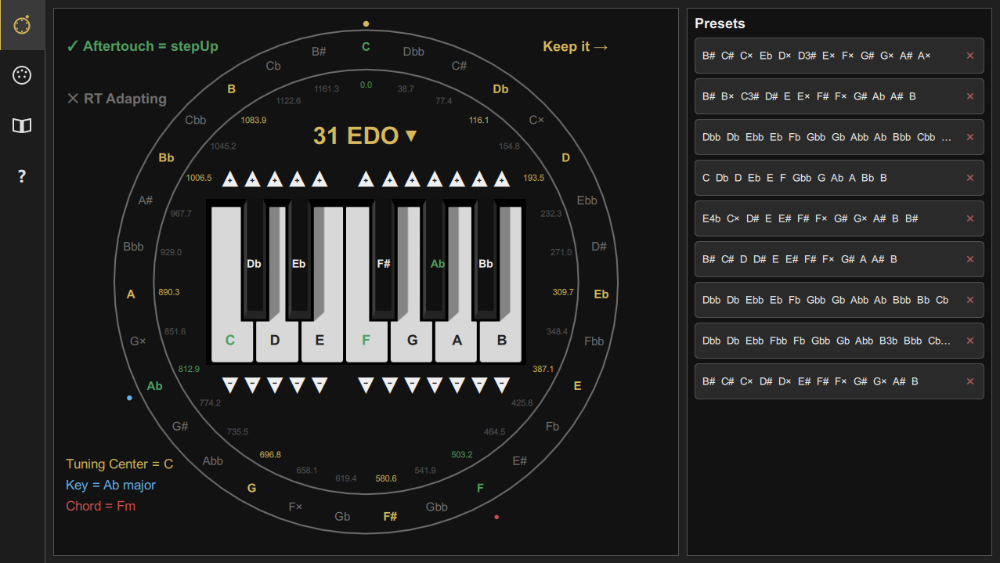

Intona User Manual
Draft version. This document is a first working draft and will be revised as the behaviour of Intona is documented in more detail.
Before You Start: How Intona Controls the MIDI Flow
Intona is not intended to work only as a device that sends tuning SysEx messages in the background.
For real-time adaptive tuning to work correctly, Intona must control the order in which tuning changes and note events reach the sound generator.
This is an important point. When Intona receives a note, it may need to analyse the musical context, select or update the current tuning, and send a MIDI tuning SysEx message before the note is actually played by the receiving instrument.
The correct order is therefore:
Note received by Intona
→ musical context is analysed
→ tuning is updated if needed
→ MIDI tuning SysEx is sent
→ Note On is sent to the tuned output channelsIf the receiving instrument plays the note directly before Intona has sent the new tuning information, the note may start with the previous tuning. This can produce wrong intonation, especially when the tuning changes in response to the note that has just been played.
For this reason, the MIDI input used by Intona should be treated as a control track or control channel. It should send MIDI data to Intona, but it should not directly trigger the sound generator.
On a hardware instrument, this usually means that the control track should be set to Local Off, or otherwise configured so that it does not produce sound directly.
The final sounding notes should be generated only from the MIDI data sent by Intona.
Control Track and Tuned Output Channels
Intona receives notes from one input channel. This channel is the control channel.
The control channel is used by Intona to understand what is being played and to decide whether the tuning has to be changed.
Intona then sends the resulting notes to the selected Tuned Output Channels.
The Tuned Output Channels have two roles:
- they receive the MIDI tuning SysEx messages generated by Intona;
- they receive the Note On and Note Off events replicated by Intona.
This ensures that the channels which play the final sound are also the channels affected by the current tuning.
Why Sending Only Tuning SysEx Is Not Enough
In some simple situations, it may seem sufficient to let the instrument play normally and use Intona only to send tuning SysEx messages.
This is not reliable for real-time adaptive tuning.
The reason is timing. If the instrument receives and plays a note before Intona has sent the tuning update, that note may start with the wrong tuning. Even if the tuning is corrected immediately afterwards, the attack of the note may already be wrong, or different parts may respond inconsistently.
For accurate real-time behaviour, Intona must receive the note first, send the required tuning information, and only then send the note to the tuned output channels.
Recommended MIDI Setup
A typical setup is:
Keyboard / sequencer control track
→ MIDI IN of Intona
→ Intona analyses the notes and sends tuning SysEx
→ Intona sends Note On / Note Off events
→ Tuned output channels of the receiving instrumentThe control track should not generate sound directly.
The selected Tuned Output Channels are the channels that produce the final sound. They should be configured on the receiving instrument as the actual sounding parts.
With this setup, Intona becomes the central point that controls both the tuning information and the timing of the notes that use that tuning.
1. Introduction
Intona is a real-time MIDI tuning application designed to retune incoming MIDI notes according to alternative tuning systems and adaptive intonation rules.
The application receives MIDI notes from an external keyboard, sequencer or MIDI source, analyses the musical context, and sends tuned MIDI data to one or more output MIDI channels.
Intona is intended for musicians, composers and researchers interested in microtonality, equal divisions of the octave, adaptive tuning, and non-standard pitch organisation.
The main goal of Intona is not only to select a static tuning, but to make intonation responsive to the musical context, while keeping the interface clear enough to be used in real time.
2. Basic Concepts
MIDI input and MIDI output
Intona works between a MIDI source and a MIDI sound generator.
The MIDI source may be:
- a MIDI keyboard;
- a MIDI controller;
- a sequencer;
- a DAW track;
- another MIDI application.
The MIDI output may be:
- an external synthesizer;
- a hardware workstation;
- a virtual MIDI port;
- a software instrument;
- a DAW input.
Incoming MIDI notes are received by Intona, processed according to the current tuning settings, and then sent to the selected MIDI output device.
Input channel
The input channel determines which MIDI channel Intona listens to.
Only notes received on the selected input channel are used as the musical input for the tuning process.
Output channels
Intona can send MIDI data to one or more output channels.
The selected output channels are shown as numbered checkboxes from 1 to 16. Checked channels are active output channels.
Using several output channels can be useful when the receiving instrument supports independent tuning information per MIDI channel, or when the same musical material has to be distributed across multiple parts.
Tuning surface
The Tuning Surface is the main performance view of Intona.
It shows the selected tuning system, the current tuning centre, the organisation of notes around the tuning circle, and the currently available adaptive tuning choices.
The central keyboard represents the twelve conventional pitch classes, while the surrounding circle represents the selected equal division of the octave.
3. MIDI Setup

The MIDI Settings page is used to configure MIDI input and output.
MIDI status
At the top of the page, Intona shows the current MIDI input status.
When the MIDI input is correctly opened, the status line displays:
MIDI IN: connected
If the input device is not available, disconnected, or already in use by another application, the status will indicate that the MIDI input could not be opened.
MIDI IN
The MIDI IN section selects the device and channel used as the input source.
Device selects the MIDI input device.
Use this field to choose the keyboard, controller, sequencer port, virtual MIDI port, or external application that sends notes to Intona.
Input channel selects the MIDI channel that Intona listens to.
Only MIDI events received on this channel are processed as input notes.
The Refresh button updates the list of available MIDI input devices. Use it after connecting a new MIDI device or after opening a virtual MIDI port.
MIDI OUT
The MIDI OUT section selects the MIDI output device and the active output channels.
Device selects the destination that receives the tuned MIDI output.
This may be a hardware synthesizer, a software instrument, a virtual MIDI port, or a MIDI input exposed by another application.
The numbered checkboxes from 1 to 16 select the active output channels.
A checked channel is active. An unchecked channel is not used.
The Refresh button updates the list of available MIDI output devices. Use it after connecting a MIDI device, starting a virtual MIDI driver, or opening a software instrument that exposes a MIDI input port.
Typical MIDI setup
- Connect a MIDI keyboard or controller to the computer.
- Select it as the MIDI IN device.
- Select the MIDI channel used by the keyboard.
- Select the target synthesizer or virtual MIDI port as the MIDI OUT device.
- Enable the output channel or channels that should receive the tuned notes.
4. Tuning Surface

The Tuning Surface page is the main control and visualisation area of Intona.
It shows the current tuning system, the tuning centre, the note layout, and the available adaptive tuning choices.
Tuning circle
The large circular display represents the selected equal division of the octave.
Each position around the circle corresponds to a step of the tuning system.
The note names show how the steps are currently interpreted in relation to the selected tuning centre and note naming system.
The smaller numerical values show the corresponding pitch positions in cents.
EDO selector
The central selector shows the current equal division of the octave, for example:
31 EDO
EDO means “Equal Division of the Octave”.
In an EDO tuning, the octave is divided into a fixed number of equal steps.
For example, in 31 EDO the octave is divided into 31 equal parts. Each step is approximately 38.71 cents.
Changing the EDO changes the available pitch grid and the relationship between note names and tuning steps.
Central keyboard
The central keyboard shows the twelve conventional pitch classes.
It acts as a familiar reference inside the microtonal tuning system.
The displayed pitch classes help relate the current EDO tuning to conventional keyboard note names.
Step controls
The plus and minus controls above and below the keyboard allow pitch classes to be shifted by tuning steps.
They provide a direct way to adjust the mapping between conventional pitch classes and the selected EDO grid.
This is useful when exploring enharmonic alternatives or when adapting the current tuning layout to a specific harmonic context.
Tuning centre
The lower-left area shows the current tuning centre, for example:
Tuning Center = C
The tuning centre is the reference point used by the current tuning interpretation.
Changing the tuning centre changes how pitch relationships are interpreted and how adaptive choices are evaluated.
Real-Time Adapting
The RT Adapting indicator shows whether real-time adaptive tuning is active.
When real-time adapting is enabled, Intona can change the tuning interpretation according to the musical context.
When it is disabled, the current tuning layout remains fixed until the user changes it manually.
Aftertouch
The Aftertouch indicator shows whether aftertouch control is enabled.
When aftertouch control is active, aftertouch messages can be used to influence tuning behaviour according to the selected mode.
When aftertouch is off, aftertouch messages do not affect the tuning.
Keep it
The Keep it control is used to keep the current tuning choice.
This is useful when Intona proposes or reaches a tuning interpretation that the user wants to preserve while continuing to play.
Adaptive choices panel
The panel on the right lists available note collections or harmonic interpretations related to the current tuning context.
Each row represents a possible tuning choice.
The highlighted notes indicate the pitch classes involved in that choice.
The small remove button on the right of each row can be used to discard a listed choice when it is no longer needed.
This panel is especially useful when working with adaptive tuning, because it shows the available alternatives in a compact form.